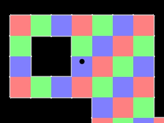
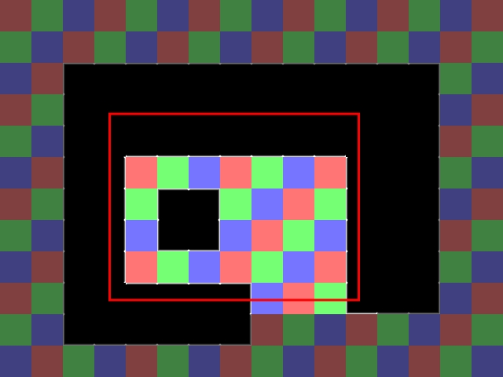

平铺是一种常用的创建灵活的关卡引擎的方法。这里你将学习如何加载一张平铺地图来放置每一块贴图以及如何与之交互并显示它们。译者注：“Tiling”有不同翻译方式，有“平铺”，“铺瓷砖”，“瓷砖式覆盖”,“拼贴”等等，这里简单地翻译为“平铺”。“Tile”可翻译为“瓷砖”、“贴图”等，这里翻译为“贴图”。
这里我们将使用这张精灵图中的12块贴图：
(这里的贴图为50%实际大小)
要创建这个关卡：
 (关卡也是50%实际大小)
(关卡也是50%实际大小)
注意，使用平铺的一个好处是我们节省了RAM(内存)占用。我们仅仅使用了一张320*240的图片，而不是一张1280*960的图片。这节约了 4 1/2 MB的RAM。
要创建这个关卡：
注意，使用平铺的一个好处是我们节省了RAM(内存)占用。我们仅仅使用了一张320*240的图片，而不是一张1280*960的图片。这节约了 4 1/2 MB的RAM。
译者注：这 4 1/2 是怎么回事？怎么算的？不解...
//贴图常量 const int TILE_WIDTH = 80; const int TILE_HEIGHT = 80; const int TOTAL_TILES = 192; const int TILE_SPRITES = 12; //The different tile sprites const int TILE_RED = 0; const int TILE_GREEN = 1; const int TILE_BLUE = 2; const int TILE_CENTER = 3; const int TILE_TOP = 4; const int TILE_TOPRIGHT = 5; const int TILE_RIGHT = 6; const int TILE_BOTTOMRIGHT = 7; const int TILE_BOTTOM = 8; const int TILE_BOTTOMLEFT = 9; const int TILE_LEFT = 10; const int TILE_TOPLEFT = 11;
这里是两组与贴图相关的全局常量。
第一组常量是：贴图尺寸，我们将要使用的贴图的数量，以及我们有多少种贴图。
第二组是不同贴图的符号常量。其中前三个贴图类型(红、绿、蓝)是地板贴图，点可以从它们上面经过。其余所有贴图为墙壁类贴图。
第一组常量是：贴图尺寸，我们将要使用的贴图的数量，以及我们有多少种贴图。
第二组是不同贴图的符号常量。其中前三个贴图类型(红、绿、蓝)是地板贴图，点可以从它们上面经过。其余所有贴图为墙壁类贴图。
//贴图
class Tile
{
private:
//贴图的属性
SDL_Rect box;
//贴图类型
int type;
public:
//初始化变量
Tile( int x, int y, int tileType );
//显示贴图
void show();
//获取贴图类型
int get_type();
//获取碰撞盒子
SDL_Rect get_box();
};
这是Tile类的分解。
"box"是贴图的坐标和尺寸，它也当做碰撞盒子用。"type"显然就是贴图的类型了。
然后，我们有构造函数来设置贴图的坐标和类型。接着，
"box"是贴图的坐标和尺寸，它也当做碰撞盒子用。"type"显然就是贴图的类型了。
然后，我们有构造函数来设置贴图的坐标和类型。接着，
show()函数在屏幕上显示贴图。最后，我们有get_type()和get_box()来获取贴图的类型和碰撞盒子。
//点
class Dot
{
private:
//点的碰撞盒子
SDL_Rect box;
//点的速度
int xVel, yVel;
public:
//初始化变量
Dot();
//处理按键并调整点的速度
void handle_input();
//移动点
void move( Tile *tiles[] );
//在屏幕上显示点
void show();
//设置摄像机到点上
void set_camera();
};
这是我们的老朋友Dot类。它原本和“滚动”一课里的是一样的，只是现在
move()函数接受贴图作为参数，以便与之交互。
Tile::Tile( int x, int y, int tileType )
{
//获取坐标
box.x = x;
box.y = y;
//设置碰撞盒子
box.w = TILE_WIDTH;
box.h = TILE_HEIGHT;
//获取贴图类型
type = tileType;
}
这是Tile类的构造函数。没有什么需要解释的，它只是按照给定的坐标设置贴图，设置大小，并获取贴图类型。
void Tile::show()
{
//如果贴图在屏幕上
if( check_collision( camera, box ) == true )
{
//显示贴图
apply_surface( box.x - camera.x, box.y - camera.y, tileSheet, screen, &clips[ type ] );
}
}
现在是时候在屏幕上显示贴图了。
首先我们检查贴图是否在屏幕内。也就是说，如果红色方框是摄像机：
当我们应用图像时，我们从精灵图中获得贴图并以相对于camera的位置进行平铺，这样贴图就能滚动了。
首先我们检查贴图是否在屏幕内。也就是说，如果红色方框是摄像机：

仅有亮着的贴图会被显示。这个很有道理，你何必要应用一个不会被看到的表面呢？
当我们应用图像时，我们从精灵图中获得贴图并以相对于camera的位置进行平铺，这样贴图就能滚动了。
int Tile::get_type()
{
return type;
}
SDL_Rect Tile::get_box()
{
return box;
}
这里的函数简单地获取贴图的类型和碰撞盒子。
bool set_tiles( Tile *tiles[] )
{
//贴图坐标
int x = 0, y = 0;
//打开地图
std::ifstream map( "lazy.map" );
//如果地图不能加载
if( map == NULL )
{
return false;
}
这里是我们设置贴图的函数。
在顶部，我们有两个坐标变量。它们是用于跟踪放置贴图的位置。然后我们打开我们的地图文件。
在顶部，我们有两个坐标变量。它们是用于跟踪放置贴图的位置。然后我们打开我们的地图文件。
//初始化贴图
for( int t = 0; t < TOTAL_TILES; t++ )
{
//决定创建哪种类型的贴图
int tileType = -1;
//从map文件读取贴图
map >> tileType;
//如果读取地图出现问题
if( map.fail() == true )
{
//Stop loading map
map.close();
return false;
}
现在是时候遍历并设置贴图了。
首先我们从文件里读入一个整数。如果读取文件时出现问题，我们关闭文件并返回false。
这是"lazy.map"文件中的内容：
00 01 02 00 01 02 00 01 02 00 01 02 00 01 02 00
01 02 00 01 02 00 01 02 00 01 02 00 01 02 00 01
02 00 11 04 04 04 04 04 04 04 04 04 04 05 01 02
00 01 10 03 03 03 03 03 03 03 03 03 03 06 02 00
01 02 10 03 08 08 08 08 08 08 08 03 03 06 00 01
02 00 10 06 00 01 02 00 01 02 00 10 03 06 01 02
00 01 10 06 01 11 05 01 02 00 01 10 03 06 02 00
01 02 10 06 02 09 07 02 00 01 02 10 03 06 00 01
02 00 10 06 00 01 02 00 01 02 00 10 03 06 01 02
00 01 10 03 04 04 04 05 02 00 01 09 08 07 02 00
01 02 09 08 08 08 08 07 00 01 02 00 01 02 00 01
02 00 01 02 00 01 02 00 01 02 00 01 02 00 01 02
这只是一串数字。每个数字与一个贴图类型相对应。这是一个简单，但可能粗糙的保存平铺地图的方式，不过这种方式是可以工作的。
首先我们从文件里读入一个整数。如果读取文件时出现问题，我们关闭文件并返回false。
这是"lazy.map"文件中的内容：
00 01 02 00 01 02 00 01 02 00 01 02 00 01 02 00
01 02 00 01 02 00 01 02 00 01 02 00 01 02 00 01
02 00 11 04 04 04 04 04 04 04 04 04 04 05 01 02
00 01 10 03 03 03 03 03 03 03 03 03 03 06 02 00
01 02 10 03 08 08 08 08 08 08 08 03 03 06 00 01
02 00 10 06 00 01 02 00 01 02 00 10 03 06 01 02
00 01 10 06 01 11 05 01 02 00 01 10 03 06 02 00
01 02 10 06 02 09 07 02 00 01 02 10 03 06 00 01
02 00 10 06 00 01 02 00 01 02 00 10 03 06 01 02
00 01 10 03 04 04 04 05 02 00 01 09 08 07 02 00
01 02 09 08 08 08 08 07 00 01 02 00 01 02 00 01
02 00 01 02 00 01 02 00 01 02 00 01 02 00 01 02
这只是一串数字。每个数字与一个贴图类型相对应。这是一个简单，但可能粗糙的保存平铺地图的方式，不过这种方式是可以工作的。
//如果数字是合法的贴图类型
if( ( tileType >= 0 ) && ( tileType < TILE_SPRITES ) )
{
tiles[ t ] = new Tile( x, y, tileType );
}
//如果我们不能识别这个数
else
{
//停止加载地图
map.close();
return false;
}
既然我们从文件中读入了数字，我们就必须设置合理的贴图。首先我们检查文件中的数字是否是合法的贴图类型。如果是的，我们放置贴图。
如果从文件中读入的数字不符合任何贴图类型，我们关闭文件并返回false。
如果从文件中读入的数字不符合任何贴图类型，我们关闭文件并返回false。
//移动到下一个贴图的位置
x += TILE_WIDTH;
//如果我们已经走得太远
if( x >= LEVEL_WIDTH )
{
//返回
x = 0;
//移动到下一行
y += TILE_HEIGHT;
}
}
在贴图放置循环的最后部分，我们移动到下一个贴图位置。
//关闭文件
map.close();
//如果地图加载正常
return true;
}
当我们搞定文件读取后，我们必须得记得通过
close()函数关闭文件。
bool touches_wall( SDL_Rect box, Tile *tiles[] )
{
//遍历贴图
for( int t = 0; t < TOTAL_TILES; t++ )
{
//如果贴图是墙壁类型的贴图
if( ( tiles[ t ]->get_type() >= TILE_CENTER ) && ( tiles[ t ]->get_type() <= TILE_TOPLEFT ) )
{
//如果碰撞盒子碰到了墙壁贴图
if( check_collision( box, tiles[ t ]->get_box() ) == true )
{
return true;
}
}
}
//如果没有墙壁贴图被碰到
return false;
}
touches_wall()遍历贴图的集合并在发现有一个墙壁贴图与给定碰撞盒子发生碰撞时返回true。
我们并没有逐个地检查每一种墙壁贴图，我们记得贴图类型是这样标号的：
0 = TILE_RED
1 = TILE_GREEN
2 = TILE_BLUE
3 = TILE_CENTER
4 = TILE_TOP
5 = TILE_TOPRIGHT
6 = TILE_RIGHT
7 = TILE_BOTTOMRIGHT
8 = TILE_BOTTOM
9 = TILE_BOTTOMLEFT
10 = TILE_LEFT
11 = TILE_TOPLEFT
就像你看到的那样，所有的墙壁贴图的数字都在TILE_CENTER和TILE_TOPLEFT之间。所以要检查一个贴图是否是墙壁，只需检查它的类型数字是否在TILE_CENTER和TILE_TOPLEFT之间。
void Dot::move( Tile *tiles[] )
{
//向左或向右移动点
box.x += xVel;
//如果点向左或向右走得太远，或者碰到了墙壁
if( ( box.x < 0 ) || ( box.x + DOT_WIDTH > LEVEL_WIDTH ) || touches_wall( box, tiles ) )
{
//回退
box.x -= xVel;
}
//向上或向下移动点
box.y += yVel;
//如果点向上或向下走得太远，或者碰到了墙壁
if( ( box.y < 0 ) || ( box.y + DOT_HEIGHT > LEVEL_HEIGHT ) || touches_wall( box, tiles ) )
{
//回退
box.y -= yVel;
}
}
我们在这里对Dot类的唯一更改是在我们移动点的时候，检查点是否与任何墙壁发生碰撞。
//退出标志
bool quit = false;
//点
Dot myDot;
//将要用到的点
Tile *tiles[ TOTAL_TILES ];
//帧率校准器
Timer fps;
//初始化
if( init() == false )
{
return 1;
}
//加载文件
if( load_files() == false )
{
return 1;
}
//剪切精灵图
clip_tiles();
//设置贴图
if( set_tiles( tiles ) == false )
{
return 1;
}
这是
在靠近最上面的地方，我们创建了一个Tile指针数组。然后我们初始化并加载图片文件，用
main()函数的最上面的部分。
在靠近最上面的地方，我们创建了一个Tile指针数组。然后我们初始化并加载图片文件，用
clip_tiles()函数设置精灵图的剪切矩形。随后，我们使用set_tiles()来创建并设置我们的贴图。
//当用户还未推出
while( quit == false )
{
//启动帧计时器
fps.start();
//当有事件需要处理
while( SDL_PollEvent( &event ) )
{
//为点处理事件
myDot.handle_input();
//如果用户叉掉了窗口
if( event.type == SDL_QUIT )
{
//退出程序
quit = true;
}
}
//移动点
myDot.move( tiles );
//设置摄像头
myDot.set_camera();
//显示贴图
for( int t = 0; t < TOTAL_TILES; t++ )
{
tiles[ t ]->show();
}
//在屏幕上显示点
myDot.show();
//更新屏幕
if( SDL_Flip( screen ) == -1 )
{
return 1;
}
//捕获帧率
if( fps.get_ticks() < 1000 / FRAMES_PER_SECOND )
{
SDL_Delay( ( 1000 / FRAMES_PER_SECOND ) - fps.get_ticks() );
}
}
这就是我们的主循环了。没什么需要解释的，只是想用行动展示所有的东西。
void clean_up( Tile *tiles[] )
{
//释放表面
SDL_FreeSurface( dot );
SDL_FreeSurface( tileSheet );
//释放贴图
for( int t = 0; t < TOTAL_TILES; t++ )
{
delete tiles[ t ];
}
//退出SDL
SDL_Quit();
}